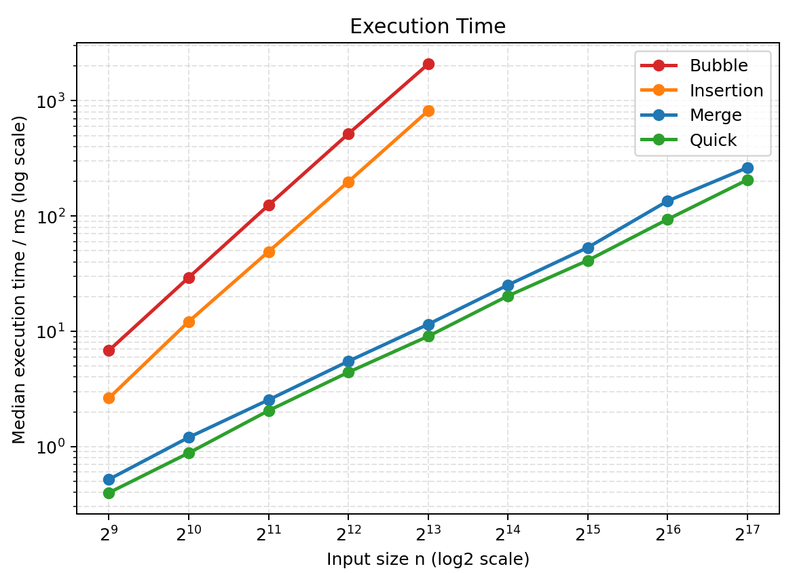
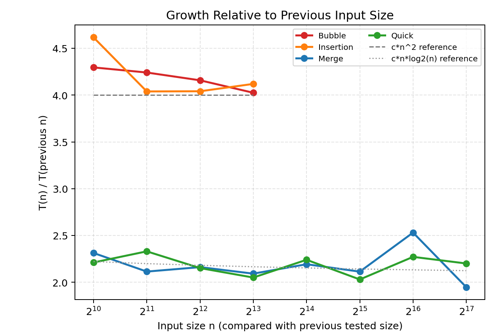

作品集
/ 实验报告
全部报告
算法实验 / 性能比较
四种排序算法性能比较
比较冒泡、插入、归并和快速排序随数据规模变化的耗时。
下载报告 ↓
实验目的
在相同输入下测量不同复杂度算法的运行时间。
实现要点
共同测试规模为 512 至 8192，大规模输入继续比较归并排序与快速排序。
每组重复 5 次取中位数；输入生成、复制和结果校验不计入排序时间。
实测图表与完整 Markdown 报告均保留，计时结果依赖原实验环境。
运行结果

图 1 四种排序算法运行时间
下载截图 ↓

图 2 运行时间增长趋势
下载截图 ↓
报告与附件
完整 Markdown 报告 ↓
Python 源代码 ↓
实验汇总数据 ↓